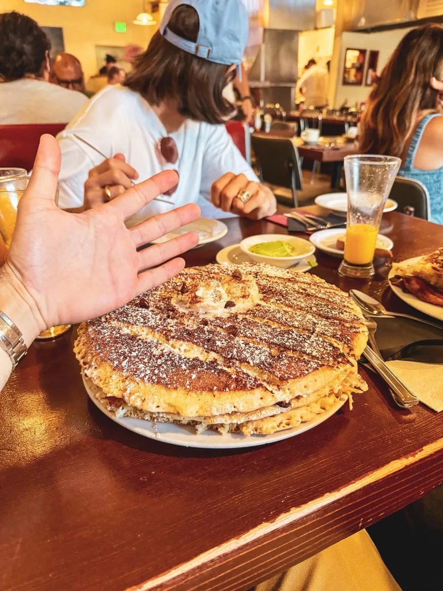
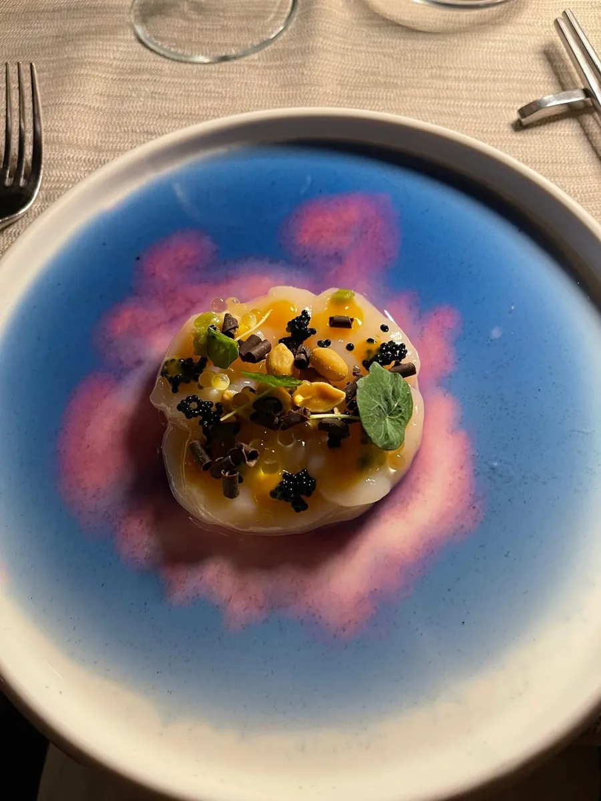
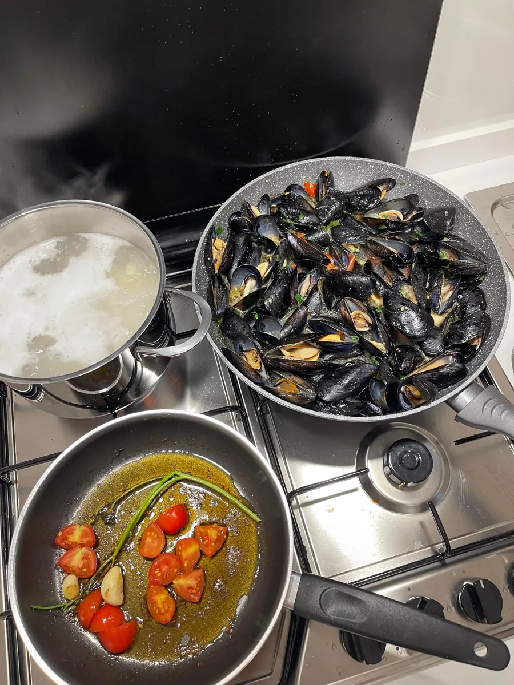
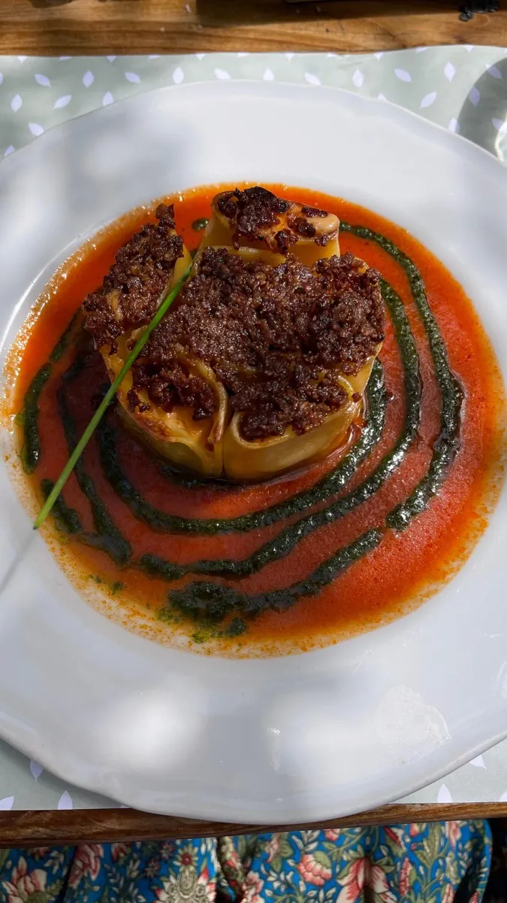
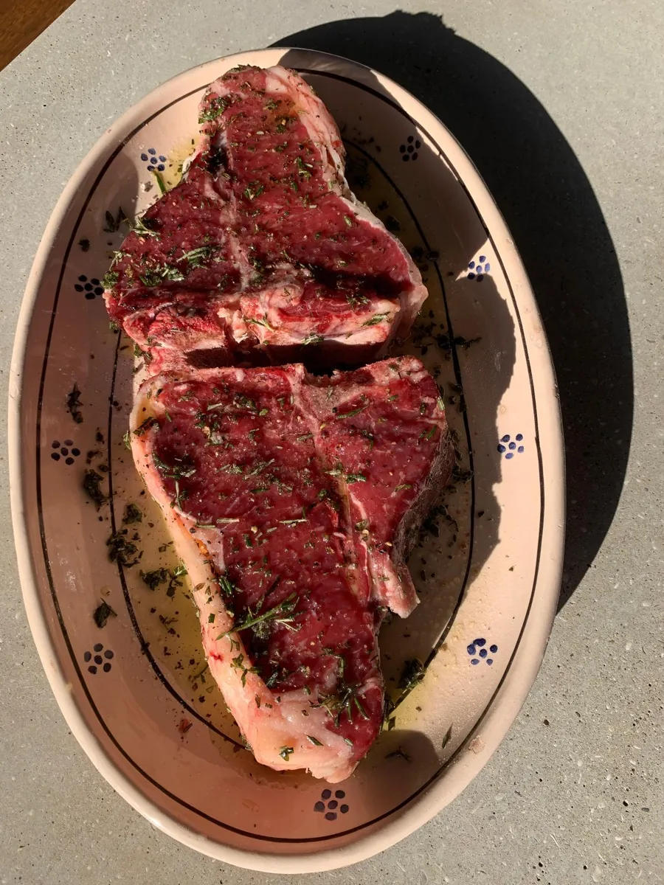
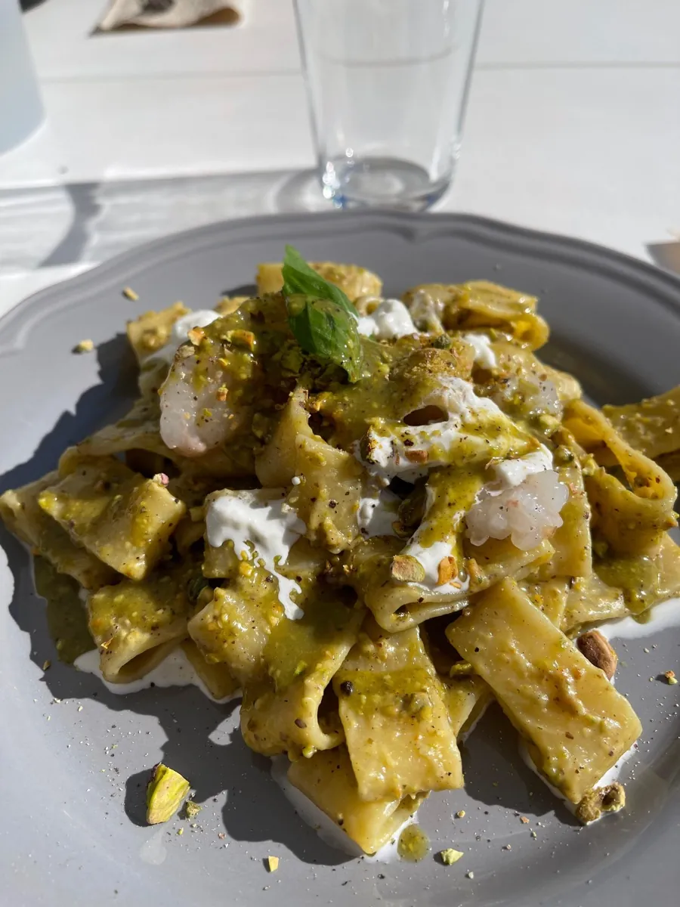

Makes me high
Curiosity and creativity have always been central to my life.
When I'm not tinkering at work, I love exploring, learning, trying new things and diving into new hobbies.
Here are just a few of the things I loved.

For me, there’s real joy in discovering new flavors, trying to recreate them in the kitchen, and sharing the result. Cooking is about making people happy, and that same spirit inspires the way I approach my work.





